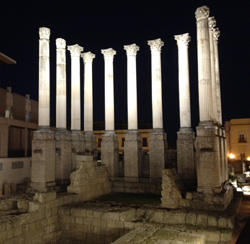
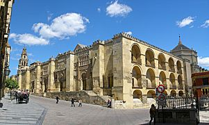
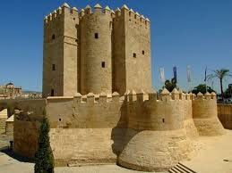

Cordoba
Origenes
Los orígenes de Córdoba se pierden en el tiempo. Su situación cercana al río y la riqueza de las
tierras de la campiña la configuraron como lugar idóneo para las primeras ocupaciones prehistóricas.
Pero no es hasta el Bronce Final (siglos ix y viii a.C.) cuando se crea el primer asentamiento
propiamente dicho. Con la llegada de fenicios y griegos a la península, la ciudad se reafirma
como un importante centro minero y comercial gracias a la navegabilidad del Guadalquivir. Este
hecho favoreció las relaciones y la difusión artística y comercial, integrando a esta localidad
con las principales urbes del momento.
Córdoba Romana

La toma de Córdoba por los romanos en el siglo II a.C. auspicia uno de los momentos de
mayor esplendor de su Historia junto con el del califato musulmán. Fue a mediados del siglo II
cuando un general llamado Claudio Marcelo, funda Corduba, erigiéndose desde este mismo momento
como capital de la Hispania Ulterior. Años prósperos fueron los de la República, truncados por
la victoria cesariana en la batalla de Munda, al tomar la ciudad partido por el bando pompeyano.
Tras los primeros años de declive imperial, el César Augusto restituye el merecido estatus de esta
zona reservando sus tierras a los mejores veteranos de sus tropas, otorgándole el título de Colonia
Patricia. Córdoba vive, bajo dominio romano, una intensa monumentalidad y enriquecimiento de su
infraestructura pública. Sin duda se mantuvo un gran movimiento comercial y cultural, muestra de
ello son los dos foros, el colonial y el provincial, que acogía la ciudad. Se levantan grandes
edificios, como el recientemente descubierto anfiteatro máximo, grandiosos templos, caso del
situado en la calle Claudio Marcelo y se adornan las calles con excelsas esculturas.
El traslado de la capitalidad a Hispalis y la disgregación cada vez más inminente del imperio,
sumen a la localidad en un estancamiento cultural y económico que imperará durante todo el periodo
de ocupación visigoda.
Córdoba Musulmana

Sin embargo, en el siglo VIII, tuvo lugar un hecho que cambiará la Historia de todo el mundo
occidental y que tiene como escenario nuestra ciudad. Un contingente de tropas árabes desembarca
en las costas mediterráneas. Fácilmente se hacen con el poder del debilitado reino visigodo.
Córdoba es tomada por Mugit, lug arteniente de Tariq, dándose desde este momento la convivencia
de los pueblos cristianos y musulmanes. Muestra de ello es el traslado de la primitiva musalla
(plataforma para la oración extramuros de la ciudad) hasta la basílica de San Vicente, lo que
constituyó el germen de la actual Mezquita aljama, previo pago por la compra de parte de la basílica.
Los primeros gobernadores de la Qurtuba islámica ya la constituyeron como centro administrativo de
las tierras conquistadas. Sin embargo, el carácter tribal de los pueblos árabes y beréberes no
tardó en acarrear disputas entre las distintas facciones que aspiraban al poder
La llegada del omeya Abd al-Rahman I, el Huido, el Desheredado, unió a los bandos descontentos
con la política imperante y a los seguidores del futuro emir. En el año 756 se produce la toma
de Córdoba y la proclamación de la misma como capital del emirato independiente de Al-Andalus.
Abd al-Rahman I realizó la primera gran ampliación de la Mezquita Aljama de Córdoba y reconstruyó
las murallas y el Alcázar. Fue Hisham I, hijo del primer emir, quien terminó las obras que
comenzara su padre en la gran mezquita y levantó el primitivo alminar, hoy en día desaparecido.
Con la llegada al poder de Abd al-Rahman II se produce la segunda gran ampliación del templo y
la ciudad vive unos momentos de gran auge constructivo.
Pero será con Abd al-Rahman III cuando Córdoba cobre un total protagonismo. En el año 929 es
proclamada capital del califato independiente de Damasco, siendo sede religiosa, política y
administrativa de todo el reino islámico occidental. Bajo el mandato del primer califa se
levanta Medina Azahara, efímera ciudad extramuros de la medina, fuente de inagotables leyendas
debido, en parte, a los ricos materiales empleados en su construcción.
Alhakam II, hijo de Abd al-Rahman III dará paso a la época de mayor esplendor cultural y
edilicio de la localidad cordobesa. Realiza la tercera gran ampliación de la Aljama, transportando
toda la riqueza de Medina Azahara hasta la mezquita. Su sucesor, Hixam II, dedicado a reinar pero
no a gobernar, dejó el poder a cargo del visir Almanzor, responsable de la tercera y última
ampliación de la mezquita.
Tras la débil administración de Almanzor e Hixam, la unificación del reino no duró mucho. En
el año 1013 se derrumba el califato, declarándose taifa hasta su definitiva caída.
Córdoba Cristiana
En junio de 1236, las tropas de Fernando III el Santo llegan a las puertas de la ciudad. La toma
no lleva mucho tiempo, produciéndose la entrada del ejército cristiano el día 26 del mismo mes.
Se inicia entonces la repoblación cristiana de Córdoba, centrándose ésta en los arrabales
musulmanes, sobre todo en la zona de la Ajerquía. Con Fernando III se proyectan 14 iglesias,
siete en la medina, ahora Villa, y siete en la Ajerquía, llamándose Iglesias Fernandinas en honor al rey.

El siglo xiv traerá consigo años duros para la población cordobesa. Entre 1366 y 1369 tiene
lugar la guerra civil que enfrenta a los partidarios de Pedro I el Cruel y a los de su hermano
bastardo Enrique de Trastámara. En 1349 Córdoba sucumbe ante la Peste Negra, hecho que se
repetirá quince años después. Los inmensos índices de mortandad, la falta de alimentos y
dinero someten a la ciudad en una gran crisis tanto económica como social.
Un siglo más tarde, con la concentración de tropas de los Reyes Católicos en Córdoba para
dar el golpe definitivo al reino de Granada, se verá un rayo de esperanza en la recuperación
de la localidad. Aquí es recibido Cristóbal Colón para exponer su proyecto de viaje a las Indias.
Una vez tomado el último reducto musulmán, Isabel y Fernando dictan la expulsión de los habitantes
judíos de todo el territorio cristiano, lo que supondrá el golpe definitivo para la mermada economía cordobesa.
Córdoba Siglos XVI-XIX
Felipe II, a finales del siglo xvi, trata de restablecer la importancia de esta ciudad. Manda
construir las Caballerizas Reales y en su honor se construye la Puerta del Puente. Sin embargo
, esta efímera recuperación se ve frenada por la administración borbónica, responsable de la
total decadencia que se vive, aunque este hecho no merma las construcciones de edificios barrocos,
de gran calidad y riqueza.
A principios del siglo XIX Córdoba sufre el asedio de la ocupación francesa. Fiera fue la lucha
y constante la oposición que encontraron los ejércitos napoleónicos. Pese a ello, la renovación
urbanística que se proyecta en estos años de gobierno francés será predominante en el futuro.
Las disputas carlistas, años más tarde, empobrecen aún más la economía de la localidad.
Córdoba Siglo XX
Será a mediados del siglo xx cuando Córdoba recupere parte del esplendor e importancia perdidos
en el pasado. El crecimiento de la población y la economía, así como la creación de la
Universidad, enriquecen artística y culturalmente la ciudad. Se proyectan nuevos edificios y
la Córdoba cosmopolita se siente preparada para convivir con su patrimonio histórico, siendo
la proclamación de parte de la ciudad como Patrimonio de la Humanidad, uno de los mayores
orgullos de todos los ciudadanos, concienciados en la conservación y difusión de nuestra Historia